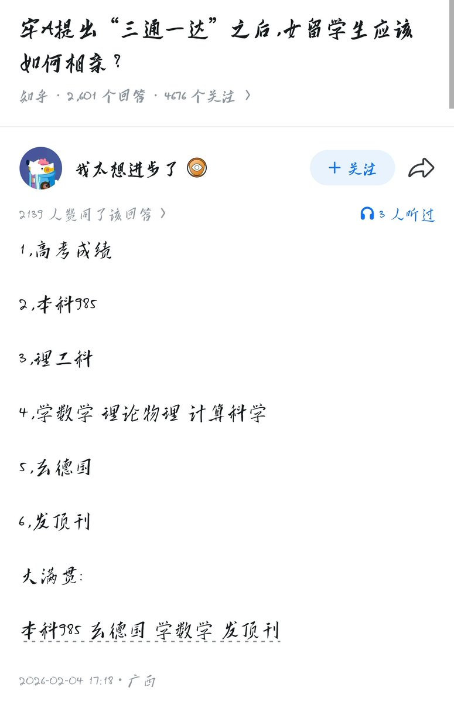

顺便提一下：“滥交”也是我反对的说法。这个词的意思就是你玩的太花了，你的性伴侣太多了。那我请问这种事情难道还有一个“合理”标准？一个人的一生中和多少及以上的人发生性关系算是“过度”“滥”交？又如何定义“合理”交，“适度”交？
保护好自己的健康，自由的性行为是不应被指责的，无论是在国内还是国外

保护好自己的健康，自由的性行为是不应被指责的，无论是在国内还是国外

回头看当时这些尬吹德国理工的属实难绷，把德国单拎出来暂时免死，是一种赛博怀柔政策，并不是这些人真觉得德国留学真的有多好，而是目前的舆论形势需要有一个留学“净土”，来反衬那些玩的“花”的有多么罪恶，当时这个留学净土人设分给德国了而已。以后这个人设可能给俄罗斯，甚至伊朗、朝鲜. https://t.co/p5p4BaYbcS https://t.co/2jGvbU8vZA